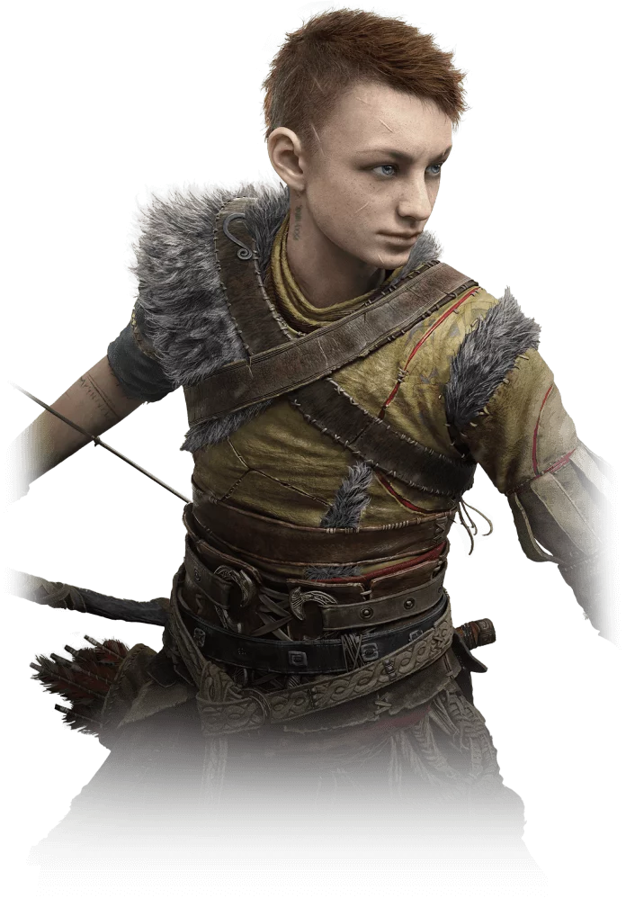
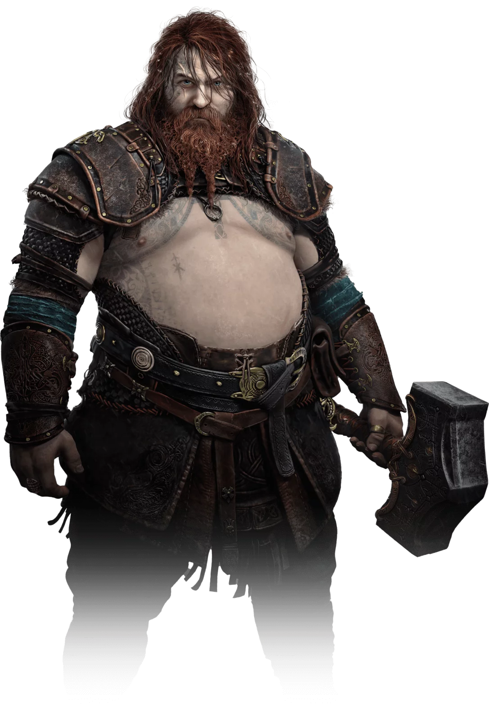
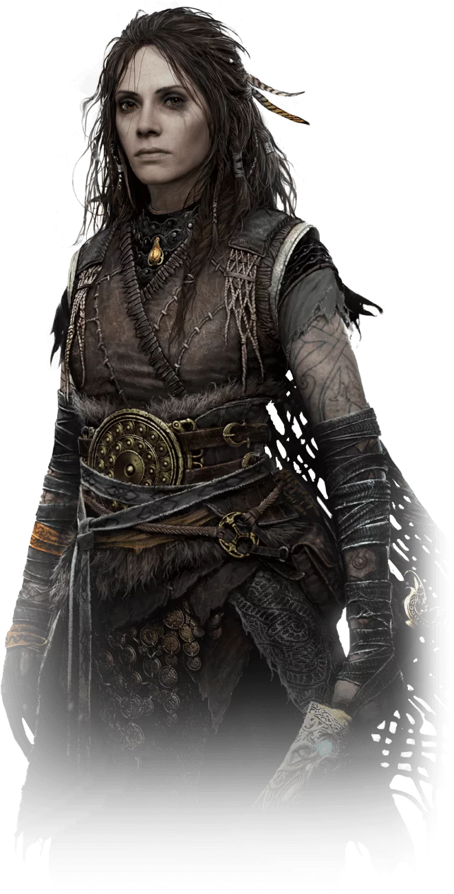
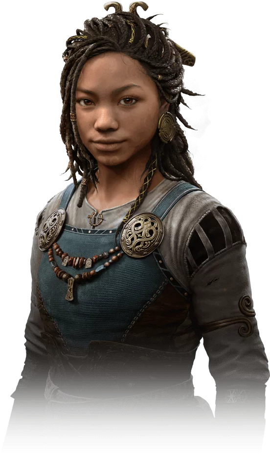
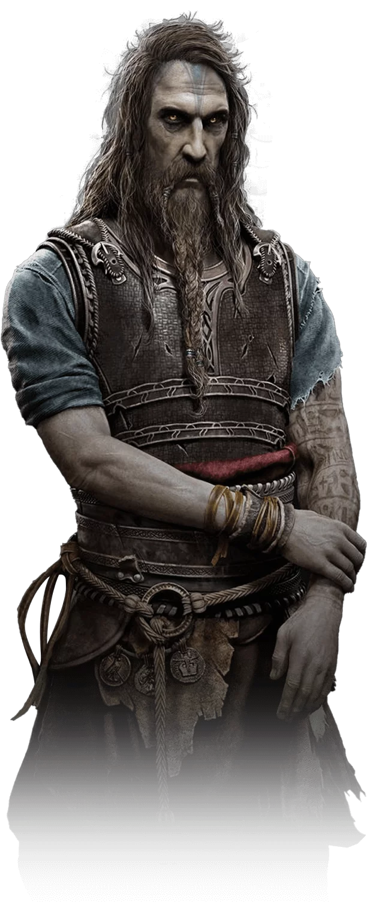
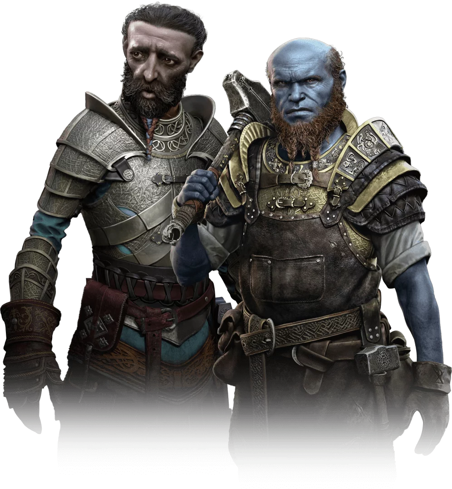
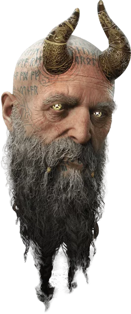

Kratos e Atreus estão de volta em uma épica aventura até o fim de tudo que conhecemos!
Enfrente Deuses, monstros e mortais aterrorizantes!
O Ragnarök está aqui, escolha entre sua segurança e a dos 9 reinos!
Tudo se une para forjar um épico de ação monumental que adiciona mais um marco impressionante ao cenário dos videogames.
 A escrita, as performances e a música são excepcionais, dando vida a esta tapeçaria nórdica expansiva - mas mesmo que segure seu coração em uma mão com sua história contada com elegância, está triturando
ossos na outra com um combate fantasticamente feroz.
A escrita, as performances e a música são excepcionais, dando vida a esta tapeçaria nórdica expansiva - mas mesmo que segure seu coração em uma mão com sua história contada com elegância, está triturando
ossos na outra com um combate fantasticamente feroz.
 Atreus busca o conhecimento para entender a profecia de "Loki" e definir o papel dele no Ragnarök. Kratos deve se desacorrentar do medo de repetir erros do passado para ser o pai que Atreus precisa.
Atreus busca o conhecimento para entender a profecia de "Loki" e definir o papel dele no Ragnarök. Kratos deve se desacorrentar do medo de repetir erros do passado para ser o pai que Atreus precisa.
A escrita, as performances e a música são excepcionais, dando vida a esta tapeçaria nórdica expansiva - mas mesmo que segure seu coração em uma mão com sua história contada com elegância, está triturando
ossos na outra com um combate fantasticamente feroz.
Atreus busca o conhecimento para entender a profecia de "Loki" e definir o papel dele no Ragnarök. Kratos deve se desacorrentar do medo de repetir erros do passado para ser o pai que Atreus precisa.Personagens
-
 Kratos
Kratos
-  Atreus
-
O deus da guerra espartano construiu uma nova vida em Midgard.
A paternidade deu a Kratos um novo propósito. Com o Ragnarök se aproximando, os riscos nunca foram tão altos. Kratos deve se decidir entre proteger
o filho e a vida que construíram juntos ou defender os Nove Reinos da guerra catastrófica.
- Atreus é um semideus adolescente, filho de Kratos e da Giganta Laufey. Os Gigantes e os Aesir o conhecem como "Loki". Com a iminência do Ragnarök, Atreus quer a todo custo explorar e compreender melhor a própria identidade para encontrar seu lugar no mundo. Ele treinou muito com o pai e, embora o relacionamento entre os dois permaneça firme, Atreus anseia por começar a seguir o seu próprio caminho.
-  Thor
-  Freya
-  Angrboda
- Thor, o lendário deus do trovão, é filho de Odin e campeão dos Aesir. Magni e Modi, seus filhos, eram aliados de Baldur e foram mortos por Kratos e Atreus.
- Freya é uma deusa Vanir, já foi líder das Valquírias, ex-mulher de Odin e antiga rainha dos Aesir. Após a morte do seu amado filho Baldur, que estava afastado dela, Freya jurou uma vingança violenta contra Kratos e Atreus.
- Angrboda faz parte dos últimos Gigantes que restaram. Após a queda de Jötunheim, ela se escondeu por muitos anos à espera do momento para concretizar as profecias dos Jötnar.
-  Tyr
-  Brok e Sindri
-  Mimir
- Týr é o deus da guerra Aesir que desapareceu há muito tempo. Ele viajou pelo mundo e se tornou um grande aliado dos Gigantes, buscando a paz entre os Aesir e os Jötnar. Quando Odin violou a paz e declarou guerra a Jötunheim, Týr foi aprisionado.
- Brok e Sindri, os Irmãos Huldra, são ferreiros Anões lendários. Eles são conhecidos ao redor dos Nove Reinos pela impressionante capacidade que têm de forjar armamentos lendários para os deuses. Após reatarem a relação há não muito tempo, os irmãos se uniram para apoiar Kratos e Atreus. O Ragnarök vai pôr à prova a força da união entre esses dois.
- Ele pode até ser uma cabeça decepada que depois foi ressuscitada, mas o Mimir continua com o título de homem mais inteligente vivo. Quando Kratos e Atreus o libertaram da árvore em que Odin o mantinha aprisionado, Mimir se juntou à aventura deles e se tornou um amigo de confiança e conselheiro tanto para o pai quanto para o filho. Com os Nove Reinos afundando no caos, agora eles precisarão da sabedoria do Mimir mais do que nunca.
.png) Ps4 Version
Compre Aqui
Ps5 Version
Compre Aqui
Ps4 Version
Compre Aqui
Ps5 Version
Compre Aqui